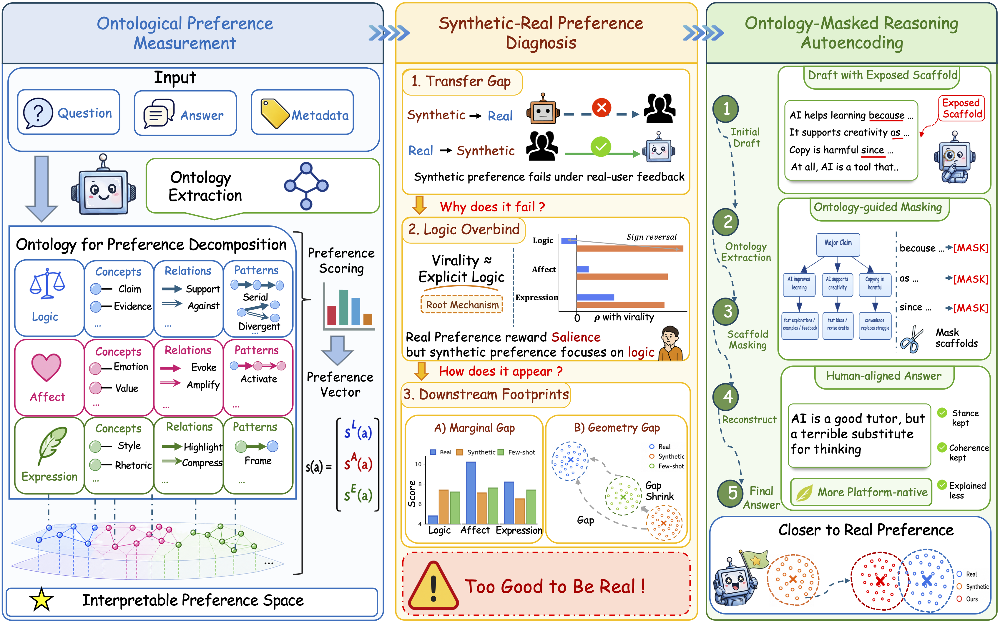
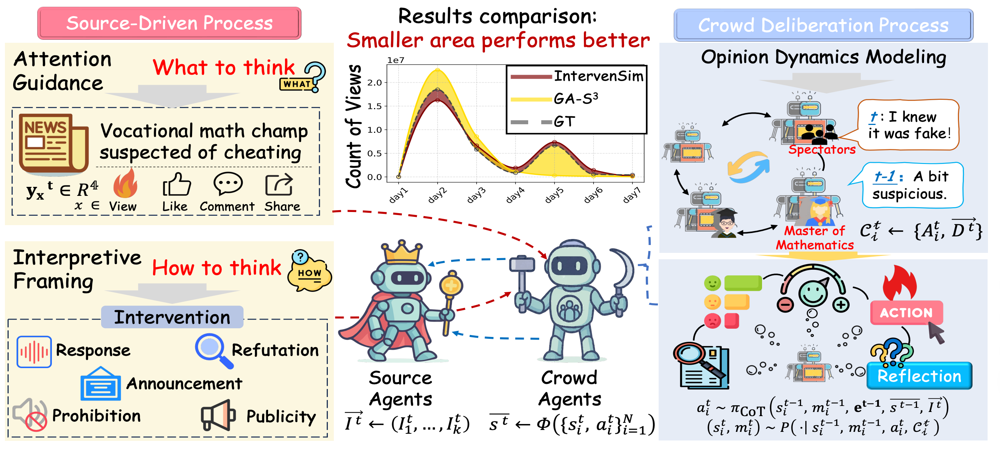

Music
I'm a huge fan of Taylor Swift and Lana Del Rey, and I enjoy collecting their vinyl albums.
Undergraduate Student, Cyber Science and Engineering
Huazhong University of Science and Technology (HUST) · Qiming Experimental Class
Hi, I'm Xinglang (Norman) Zhang, a sophomore undergraduate majoring in Cyber Science and Engineering at Huazhong University of Science and Technology (HUST), advised by Professor Zikai Song at the Media Lab. This summer, I will join the Blender Lab at UIUC as a Research Intern to explore Agentic Intelligence under the supervision of Professor Heng Ji. I'm interested in AI reasoning and logic, and I enjoy exploring how structured thinking and human insight can work together.
I'm naturally proactive and collaborative—I like initiating ideas, working with others, and turning abstract concepts into practical work. Beyond research, I value communication, responsibility, and long-term growth.
I'm still learning, but highly motivated, open to feedback, and always excited by meaningful challenges.
Semantic-Aware Logical Reasoning via a Semiotic Framework ACL 2026 Oral
ACL 2026 Main Conference (Oral), 2026. Also on arXiv:2509.24765
Introduces LogicAgent, a multi-perspective reasoning framework grounded in semiotics, and RepublicQA, a philosophy-inspired benchmark.

Logical Phase Transitions: Understanding Collapse in LLM Logical Reasoning Accepted to ACL 2026
ACL 2026 Main Conference, 2026. Also on arXiv:2601.02902
Identifies critical logical complexity thresholds in LLMs and proposes a model-agnostic Logical Complexity Metric (LoCM) alongside a neuro-symbolic curriculum tuning framework.

Too Good to Be Real: AI Synthetic Preference Misreads What Real Humans Reward Under Review
Under review, 2026.
Proposed an ontology-based preference decomposition framework and uncovered a synthetic-real preference gap: LLMs overvalue explicit reasoning, while real platform users reward affective and expressive salience.

IntervenSim: Intervention-Aware Social Network Simulation for Opinion Dynamics
arXiv preprint, 2026. Also on arXiv:2604.06600
Introduces an intervention-aware closed-loop simulation framework that jointly models source-side interventions and crowd feedback to better capture evolving opinion dynamics in online social networks.

Neural-Symbolic AI, LLM Agents, Computational Social Science
PyTorch, Transformers, LoRA, SFT, RLHF, vLLM, Deep Learning
I'm a huge fan of Taylor Swift and Lana Del Rey, and I enjoy collecting their vinyl albums.
Hachi from Chiikawa. He's cute, positive, hardworking, and kind to everyone around him.
Ultimate Frisbee.